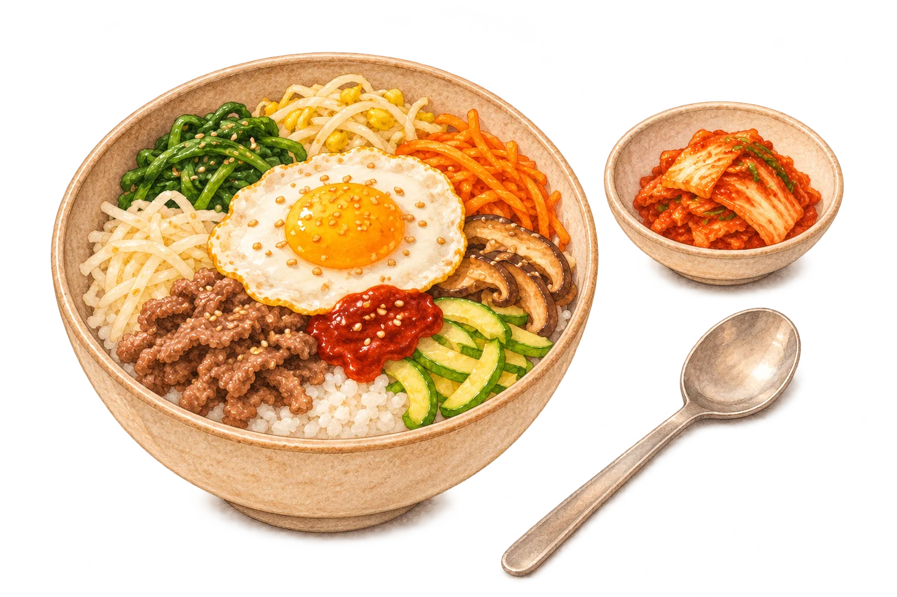

8문항 취향 테스트오늘의 한 끼,
오늘의 한 끼,
나의 푸드 스타일
수업 사이의 작은 고민. 무엇을 먹을지 고르는 취향에도 나만의 이야기가 있어요.

나의 취향 기록
완료한 기록은 현재 브라우저에 저장됩니다.
더 끌리는 하나를 골라 주세요.
나의 푸드 스타일은
수업 사이의 작은 고민. 무엇을 먹을지 고르는 취향에도 나만의 이야기가 있어요.

완료한 기록은 현재 브라우저에 저장됩니다.
나의 푸드 스타일은